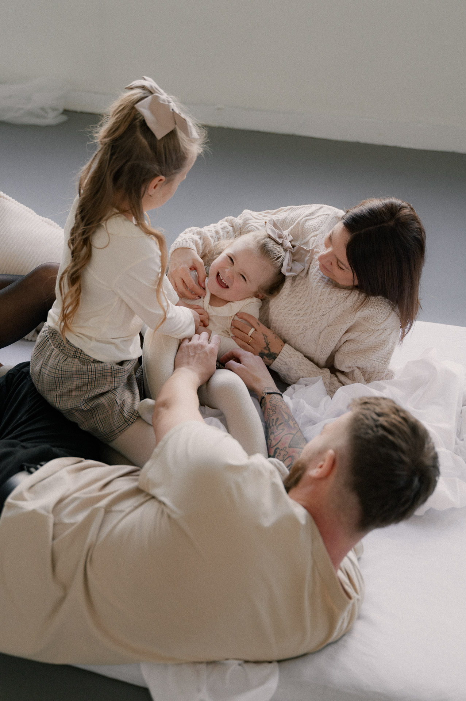

portrétní/rodinné/párové fotografie
Mým hlavním cílem je zaznamenat atmosféru, vaše pocity a vaši osobnost. Snažím se, aby pro vás bylo focení co nejpříjemnější a abyste na fotkách vypadali co nejvíce přirozeně. Moc dobře totiž vím, jak se člověk cítí, když na něj někdo namíří foťák a řekne mu, ať se usmívá. Na mém focení žádné křečovité pózy a úsměvy nečekejte. Focení můžeme mít i ve formě procházky, na které se nejdřív seznámíme a až se budete cítit v pohodě, začneme fotit. Místa focení vybírám většinou taková, na kterých trávíte rádi svůj čas, proto to může být vaše oblíbené místo v přírodě, kavárna, či váš domov.

15 fotek
3 000,-
- ~ fotky si vybíráte vy z náhledů
- ~ každá další fotka 150,-/ks

všechny fotky
4 200,-
- ~ fotky vybírám já, dostanete všechny, na kterých vám to sluší (obvykle odevzdávám 40 a více fotek)
- ~ dostanete ode mě tipy okolo focení (např. co si vzít na sebe, na jaké lokaci fotit apod.)
- ~ fotím primárně v exteriéru, pokud ale budete chtít v interiéru, není problém - řekněte mi to prosím už při domlouvání termínu, abych s tím počítala a mohla zajistit všechny věci okolo (za pronájem prostorů/ateliéru, případně specifické techniky je účtován poplatek)
- ~ rezervace termínu je platná až po zaplacení zálohy
- ~ v ceně není zahrnuta vizážistka, pokud si ji ale budete přát, dejte mi vědět a domluvím vám ji
- ~ k ceně se připočítává doprava 8 Kč/km (mimo Brno)
- ~ délka focení v exteriéru nebo u vás doma je cca 1 hodina, v ateliéru 50 minut
- *tento ceník je platný od 1. března 2026